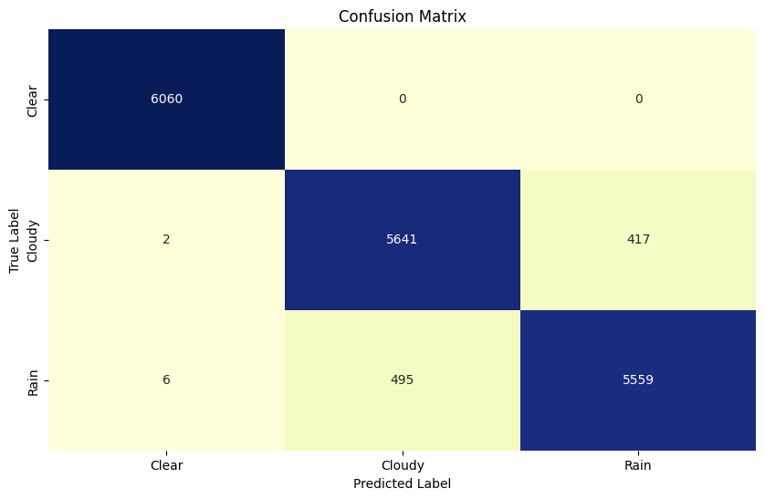

Project 1 Prediksi Cuaca Daerah Surabaya Multivariate#
Load Library#
import pandas as pd
import numpy as np
import matplotlib.pyplot as plt
import seaborn as sns
import joblib
from sklearn.preprocessing import LabelEncoder
from sklearn.model_selection import train_test_split
from imblearn.over_sampling import SMOTE
from sklearn.ensemble import RandomForestClassifier
from sklearn.model_selection import cross_val_score
from sklearn.metrics import accuracy_score
from sklearn.metrics import classification_report
from sklearn.metrics import confusion_matrix
EDA#
Load Data#
df = pd.read_csv('sby.csv',sep=';')
df
---------------------------------------------------------------------------
FileNotFoundError Traceback (most recent call last)
Cell In[2], line 1
----> 1 df = pd.read_csv('sby.csv',sep=';')
2 df
File ~\AppData\Local\Programs\Python\Python312\Lib\site-packages\pandas\io\parsers\readers.py:1026, in read_csv(filepath_or_buffer, sep, delimiter, header, names, index_col, usecols, dtype, engine, converters, true_values, false_values, skipinitialspace, skiprows, skipfooter, nrows, na_values, keep_default_na, na_filter, verbose, skip_blank_lines, parse_dates, infer_datetime_format, keep_date_col, date_parser, date_format, dayfirst, cache_dates, iterator, chunksize, compression, thousands, decimal, lineterminator, quotechar, quoting, doublequote, escapechar, comment, encoding, encoding_errors, dialect, on_bad_lines, delim_whitespace, low_memory, memory_map, float_precision, storage_options, dtype_backend)
1013 kwds_defaults = _refine_defaults_read(
1014 dialect,
1015 delimiter,
(...)
1022 dtype_backend=dtype_backend,
1023 )
1024 kwds.update(kwds_defaults)
-> 1026 return _read(filepath_or_buffer, kwds)
File ~\AppData\Local\Programs\Python\Python312\Lib\site-packages\pandas\io\parsers\readers.py:620, in _read(filepath_or_buffer, kwds)
617 _validate_names(kwds.get("names", None))
619 # Create the parser.
--> 620 parser = TextFileReader(filepath_or_buffer, **kwds)
622 if chunksize or iterator:
623 return parser
File ~\AppData\Local\Programs\Python\Python312\Lib\site-packages\pandas\io\parsers\readers.py:1620, in TextFileReader.__init__(self, f, engine, **kwds)
1617 self.options["has_index_names"] = kwds["has_index_names"]
1619 self.handles: IOHandles | None = None
-> 1620 self._engine = self._make_engine(f, self.engine)
File ~\AppData\Local\Programs\Python\Python312\Lib\site-packages\pandas\io\parsers\readers.py:1880, in TextFileReader._make_engine(self, f, engine)
1878 if "b" not in mode:
1879 mode += "b"
-> 1880 self.handles = get_handle(
1881 f,
1882 mode,
1883 encoding=self.options.get("encoding", None),
1884 compression=self.options.get("compression", None),
1885 memory_map=self.options.get("memory_map", False),
1886 is_text=is_text,
1887 errors=self.options.get("encoding_errors", "strict"),
1888 storage_options=self.options.get("storage_options", None),
1889 )
1890 assert self.handles is not None
1891 f = self.handles.handle
File ~\AppData\Local\Programs\Python\Python312\Lib\site-packages\pandas\io\common.py:873, in get_handle(path_or_buf, mode, encoding, compression, memory_map, is_text, errors, storage_options)
868 elif isinstance(handle, str):
869 # Check whether the filename is to be opened in binary mode.
870 # Binary mode does not support 'encoding' and 'newline'.
871 if ioargs.encoding and "b" not in ioargs.mode:
872 # Encoding
--> 873 handle = open(
874 handle,
875 ioargs.mode,
876 encoding=ioargs.encoding,
877 errors=errors,
878 newline="",
879 )
880 else:
881 # Binary mode
882 handle = open(handle, ioargs.mode)
FileNotFoundError: [Errno 2] No such file or directory: 'sby.csv'
Info Data#
df.info()
<class 'pandas.core.frame.DataFrame'>
RangeIndex: 8784 entries, 0 to 8783
Data columns (total 22 columns):
# Column Non-Null Count Dtype
--- ------ -------------- -----
0 name 8784 non-null object
1 datetime 8784 non-null object
2 temp 8784 non-null float64
3 feelslike 8784 non-null float64
4 dew 8784 non-null float64
5 humidity 8784 non-null float64
6 precip 8784 non-null float64
7 precipprob 8784 non-null int64
8 preciptype 1727 non-null object
9 snow 8784 non-null int64
10 snowdepth 8784 non-null int64
11 windgust 8784 non-null float64
12 windspeed 8784 non-null float64
13 winddir 8784 non-null float64
14 sealevelpressure 8784 non-null float64
15 cloudcover 8784 non-null float64
16 visibility 8784 non-null float64
17 solarradiation 8784 non-null int64
18 solarenergy 8784 non-null float64
19 uvindex 8784 non-null int64
20 severerisk 8784 non-null int64
21 conditions 8784 non-null object
dtypes: float64(12), int64(6), object(4)
memory usage: 1.5+ MB
Encoding Data Untuk EDA#
eda_encoded = df.copy()
eda_encoded.drop(columns=['datetime','name'], inplace=True)
encoderd_cols = ['preciptype', 'conditions',]
label_encoder = LabelEncoder()
for col in encoderd_cols:
eda_encoded[col] = label_encoder.fit_transform(df[col].astype(str))
eda_encoded = pd.get_dummies(eda_encoded, drop_first=True)
eda_encoded.info()
<class 'pandas.core.frame.DataFrame'>
RangeIndex: 8784 entries, 0 to 8783
Data columns (total 20 columns):
# Column Non-Null Count Dtype
--- ------ -------------- -----
0 temp 8784 non-null float64
1 feelslike 8784 non-null float64
2 dew 8784 non-null float64
3 humidity 8784 non-null float64
4 precip 8784 non-null float64
5 precipprob 8784 non-null int64
6 preciptype 8784 non-null int32
7 snow 8784 non-null int64
8 snowdepth 8784 non-null int64
9 windgust 8784 non-null float64
10 windspeed 8784 non-null float64
11 winddir 8784 non-null float64
12 sealevelpressure 8784 non-null float64
13 cloudcover 8784 non-null float64
14 visibility 8784 non-null float64
15 solarradiation 8784 non-null int64
16 solarenergy 8784 non-null float64
17 uvindex 8784 non-null int64
18 severerisk 8784 non-null int64
19 conditions 8784 non-null int32
dtypes: float64(12), int32(2), int64(6)
memory usage: 1.3 MB
Histogram Data#
eda_encoded.hist(figsize=(10,10))
array([[<Axes: title={'center': 'temp'}>,
<Axes: title={'center': 'feelslike'}>,
<Axes: title={'center': 'dew'}>,
<Axes: title={'center': 'humidity'}>],
[<Axes: title={'center': 'precip'}>,
<Axes: title={'center': 'precipprob'}>,
<Axes: title={'center': 'preciptype'}>,
<Axes: title={'center': 'snow'}>],
[<Axes: title={'center': 'snowdepth'}>,
<Axes: title={'center': 'windgust'}>,
<Axes: title={'center': 'windspeed'}>,
<Axes: title={'center': 'winddir'}>],
[<Axes: title={'center': 'sealevelpressure'}>,
<Axes: title={'center': 'cloudcover'}>,
<Axes: title={'center': 'visibility'}>,
<Axes: title={'center': 'solarradiation'}>],
[<Axes: title={'center': 'solarenergy'}>,
<Axes: title={'center': 'uvindex'}>,
<Axes: title={'center': 'severerisk'}>,
<Axes: title={'center': 'conditions'}>]], dtype=object)
Corelation Matrix#
corr_matrix = eda_encoded.corr()
plt.figure(figsize=(12, 8))
sns.heatmap(corr_matrix, annot=True, cmap='coolwarm', fmt='.2f')
plt.title('Correlation Matrix')
plt.show()
Prepocessing#
Label Mapping#
label_mapping = {
'Partially cloudy': 'Cloudy',
'Rain, Partially cloudy': 'Rain',
'Overcast': 'Cloudy',
'Rain, Overcast': 'Rain',
'Clear': 'Clear',
'Rain': 'Rain'
}
df['conditions'] = df['conditions'].map(label_mapping)
df['conditions'].unique()
array(['Cloudy', 'Rain', 'Clear'], dtype=object)
df['conditions'].unique()
array(['Cloudy', 'Rain', 'Clear'], dtype=object)
Select Feature#
df.drop(columns=['snowdepth', 'snow', 'preciptype', 'precipprob', 'precip', 'name', 'datetime', 'severerisk', 'uvindex', 'solarradiation', 'solarenergy',
'sealevelpressure'], inplace=True)
df
| temp | feelslike | dew | humidity | windgust | windspeed | winddir | cloudcover | visibility | conditions | |
|---|---|---|---|---|---|---|---|---|---|---|
| 0 | 27.0 | 30.6 | 25.0 | 88.84 | 11.9 | 9.4 | 270.0 | 50.0 | 7.0 | Cloudy |
| 1 | 27.9 | 32.0 | 24.4 | 81.40 | 6.1 | 3.6 | 258.0 | 75.9 | 7.1 | Cloudy |
| 2 | 27.0 | 31.2 | 26.0 | 94.27 | 2.5 | 13.0 | 70.0 | 50.0 | 3.0 | Cloudy |
| 3 | 27.0 | 31.2 | 26.0 | 94.27 | 5.4 | 3.6 | 80.0 | 50.0 | 5.0 | Cloudy |
| 4 | 27.2 | 31.9 | 26.1 | 93.51 | 7.2 | 0.4 | 320.0 | 82.9 | 7.4 | Rain |
| ... | ... | ... | ... | ... | ... | ... | ... | ... | ... | ... |
| 8779 | 27.0 | 30.0 | 24.0 | 83.67 | 6.1 | 7.6 | 290.0 | 25.0 | 8.0 | Rain |
| 8780 | 27.0 | 30.0 | 24.0 | 83.67 | 7.2 | 9.4 | 290.0 | 25.0 | 8.0 | Cloudy |
| 8781 | 27.0 | 30.0 | 24.0 | 83.67 | 7.2 | 7.6 | 310.0 | 25.0 | 8.0 | Rain |
| 8782 | 26.0 | 26.0 | 24.0 | 88.75 | 6.8 | 9.4 | 270.0 | 25.0 | 8.0 | Rain |
| 8783 | 26.0 | 26.0 | 24.0 | 88.75 | 5.4 | 5.4 | 280.0 | 25.0 | 8.0 | Cloudy |
8784 rows 10 columns
Encoding Label#
label_encoder_new = LabelEncoder()
df['conditions'] = label_encoder_new.fit_transform(df['conditions'])
df
| temp | feelslike | dew | humidity | windgust | windspeed | winddir | cloudcover | visibility | conditions | |
|---|---|---|---|---|---|---|---|---|---|---|
| 0 | 27.0 | 30.6 | 25.0 | 88.84 | 11.9 | 9.4 | 270.0 | 50.0 | 7.0 | 1 |
| 1 | 27.9 | 32.0 | 24.4 | 81.40 | 6.1 | 3.6 | 258.0 | 75.9 | 7.1 | 1 |
| 2 | 27.0 | 31.2 | 26.0 | 94.27 | 2.5 | 13.0 | 70.0 | 50.0 | 3.0 | 1 |
| 3 | 27.0 | 31.2 | 26.0 | 94.27 | 5.4 | 3.6 | 80.0 | 50.0 | 5.0 | 1 |
| 4 | 27.2 | 31.9 | 26.1 | 93.51 | 7.2 | 0.4 | 320.0 | 82.9 | 7.4 | 2 |
| ... | ... | ... | ... | ... | ... | ... | ... | ... | ... | ... |
| 8779 | 27.0 | 30.0 | 24.0 | 83.67 | 6.1 | 7.6 | 290.0 | 25.0 | 8.0 | 2 |
| 8780 | 27.0 | 30.0 | 24.0 | 83.67 | 7.2 | 9.4 | 290.0 | 25.0 | 8.0 | 1 |
| 8781 | 27.0 | 30.0 | 24.0 | 83.67 | 7.2 | 7.6 | 310.0 | 25.0 | 8.0 | 2 |
| 8782 | 26.0 | 26.0 | 24.0 | 88.75 | 6.8 | 9.4 | 270.0 | 25.0 | 8.0 | 2 |
| 8783 | 26.0 | 26.0 | 24.0 | 88.75 | 5.4 | 5.4 | 280.0 | 25.0 | 8.0 | 1 |
8784 rows 10 columns
# joblib.dump(label_encoder_new, 'label_encoder.pkl')
['label_encoder.pkl']
Corelation Matrix Setelah Prepocessing#
corr_matrix = df.corr()
plt.figure(figsize=(12, 8))
sns.heatmap(corr_matrix, annot=True, cmap='coolwarm', fmt='.2f')
plt.title('Correlation Matrix')
plt.show()

Jumlah Data Setiap Class#
unique_labels, counts = np.unique(df['conditions'], return_counts=True)
label_counts = dict(zip(unique_labels, counts))
label_counts
{0: 340, 1: 7575, 2: 869}
Split Data#
Xdata = df.drop('conditions', axis=1)
ydata = df['conditions']
X_train, X_test, y_train, y_test = train_test_split(Xdata, ydata, test_size=0.2, random_state=42, stratify=ydata)
print("X_train shape:", X_train.shape)
print("X_test shape:", X_test.shape)
print("y_train shape:", y_train.shape)
print("y_test shape:", y_test.shape)
X_train shape: (7027, 9)
X_test shape: (1757, 9)
y_train shape: (7027,)
y_test shape: (1757,)
Balancing dengan Oversampling Smote#
smote = SMOTE(random_state=42)
X_resampled, y_resampled = smote.fit_resample(X_train, y_train)
Jumlah Data Setiap Class Setelah Balancing#
unique_labels, counts = np.unique(y_train, return_counts=True)
print('Sebelum = ',dict(zip(unique_labels, counts)))
unique_labels, counts = np.unique(y_resampled, return_counts=True)
print('Sesudah = ', dict(zip(unique_labels, counts)))
Sebelum = {0: 272, 1: 6060, 2: 695}
Sesudah = {0: 6060, 1: 6060, 2: 6060}
Modelling#
Modelling dengan Random Forest#
rf_classifier = RandomForestClassifier(n_estimators=100, criterion="gini", bootstrap=True, random_state=42)
rf_classifier.fit(X_resampled, y_resampled)
y_pred = rf_classifier.predict(X_test)
accuracy = accuracy_score(y_test, y_pred)
print("Accuracy:", accuracy)
print(classification_report(y_test, y_pred))
Accuracy: 0.8821855435401252
precision recall f1-score support
0 0.99 1.00 0.99 68
1 0.92 0.95 0.93 1515
2 0.37 0.26 0.30 174
accuracy 0.88 1757
macro avg 0.76 0.74 0.74 1757
weighted avg 0.87 0.88 0.87 1757
Confusion Matrix Data Tes#
cm = confusion_matrix(y_test, y_pred)
plt.figure(figsize=(10,6))
sns.heatmap(cm, annot=True, fmt="d", cmap="YlGnBu", cbar=False, xticklabels=label_encoder_new.classes_, yticklabels=label_encoder_new.classes_)
plt.xlabel('Predicted Label')
plt.ylabel('True Label')
plt.title('Confusion Matrix')
plt.show()
Cross Validation Score#
cv_score = cross_val_score(rf_classifier, X_resampled, y_resampled, cv=5, scoring='accuracy')
print("Cross Validation Score:", cv_score)
print("Average cross-validation score:", np.mean(cv_score))
Cross Validation Score: [0.87293729 0.96974697 0.97194719 0.96369637 0.96864686]
Average cross-validation score: 0.9493949394939494
Confusion Matrix Setiap Fold#
from sklearn.model_selection import cross_val_predict
y_pred_cv = cross_val_predict(rf_classifier, X_resampled, y_resampled, cv=5)
cm_cv = confusion_matrix(y_resampled, y_pred_cv)
plt.figure(figsize=(10,6))
sns.heatmap(cm_cv, annot=True, fmt="d", cmap="YlGnBu", cbar=False, xticklabels=label_encoder_new.classes_, yticklabels=label_encoder_new.classes_)
plt.xlabel('Predicted Label')
plt.ylabel('True Label')
plt.title('Confusion Matrix')
plt.show()
# Save the model

Grid Search RF#
# from sklearn.model_selection import GridSearchCV
# param_grid = {
# 'n_estimators': [100, 200, 300],
# 'max_depth': [10, 20, 30],
# 'min_samples_split': [2, 5, 10],
# 'min_samples_leaf': [1, 2, 4]
# }
# grid_search = GridSearchCV(estimator=rf_classifier, param_grid=param_grid, cv=5, n_jobs=-1, verbose=2)
# grid_search.fit(X_resampled, y_resampled)
Fitting 5 folds for each of 81 candidates, totalling 405 fits
GridSearchCV(cv=5, estimator=RandomForestClassifier(random_state=42), n_jobs=-1,
param_grid={'max_depth': [10, 20, 30],
'min_samples_leaf': [1, 2, 4],
'min_samples_split': [2, 5, 10],
'n_estimators': [100, 200, 300]},
verbose=2)In a Jupyter environment, please rerun this cell to show the HTML representation or trust the notebook. On GitHub, the HTML representation is unable to render, please try loading this page with nbviewer.org.
GridSearchCV(cv=5, estimator=RandomForestClassifier(random_state=42), n_jobs=-1,
param_grid={'max_depth': [10, 20, 30],
'min_samples_leaf': [1, 2, 4],
'min_samples_split': [2, 5, 10],
'n_estimators': [100, 200, 300]},
verbose=2)RandomForestClassifier(max_depth=30, n_estimators=300, random_state=42)
RandomForestClassifier(max_depth=30, n_estimators=300, random_state=42)
Best Parameters#
# print("Best Parameters:", grid_search.best_params_)
# print("Best Score:", grid_search.best_score_)
# best_model = grid_search.best_estimator_
# y_pred = best_model.predict(X_test)
# print("Test Accuracy:", accuracy_score(y_test, y_pred))
# print(classification_report(y_test, y_pred))
Best Parameters: {'max_depth': 30, 'min_samples_leaf': 1, 'min_samples_split': 2, 'n_estimators': 300}
Best Score: 0.9502200220022002
Test Accuracy: 0.8821855435401252
precision recall f1-score support
0 0.99 1.00 0.99 68
1 0.92 0.95 0.93 1515
2 0.37 0.26 0.30 174
accuracy 0.88 1757
macro avg 0.76 0.74 0.74 1757
weighted avg 0.87 0.88 0.87 1757
Best Parameters: {max_depth: 30, min_samples_leaf: 1, min_samples_split: 2, n_estimators: 300} Best Score: 0.9502200220022002 Test Accuracy: 0.8821855435401252 precision recall f1-score support
0 0.99 1.00 0.99 68
1 0.92 0.95 0.93 1515
2 0.37 0.26 0.30 174
accuracy 0.88 1757
macro avg 0.76 0.74 0.74 1757 weighted avg 0.87 0.88 0.87 1757
best_model = RandomForestClassifier('max_depth': 30, 'min_samples_leaf': 1, 'min_samples_split': 2, 'n_estimators': 300, random_state=42, n_jobs=-1)
cv_score = cross_val_score(best_model, X_resampled, y_resampled, cv=5, scoring='accuracy')
print("Cross Validation Score:", cv_score)
print("Average cross-validation score:", np.mean(cv_score))
Cross Validation Score: [0.87623762 0.96864686 0.97277228 0.96507151 0.96837184]
Average cross-validation score: 0.9502200220022002
cm = confusion_matrix(y_test, y_pred)
plt.figure(figsize=(10,6))
sns.heatmap(cm, annot=True, fmt="d", cmap="YlGnBu", cbar=False, xticklabels=label_encoder_new.classes_, yticklabels=label_encoder_new.classes_)
plt.xlabel('Predicted Label')
plt.ylabel('True Label')
plt.title('Confusion Matrix')
plt.show()
# joblib.dump(best_model, 'model_rf.pkl')
['model_rf.pkl']
Testing#
import requests
api = 'https://weather.visualcrossing.com/VisualCrossingWebServices/rest/services/timeline/Surabaya,ID/today?unitGroup=metric&include=hours&key=AQCL3EG5SNW9XDN44A67J95UB'
response = requests.get(api)
if response.status_code == 200:
data = response.json()
print(data)
else:
print(f"Error: {response.status_code}")
print(response.text)
{'queryCost': 1, 'latitude': -7.26309, 'longitude': 112.731, 'resolvedAddress': 'Surabaya, Indonesia', 'address': 'Surabaya,ID', 'timezone': 'Asia/Jakarta', 'tzoffset': 7.0, 'days': [{'datetime': '2024-12-03', 'datetimeEpoch': 1733158800, 'tempmax': 33.0, 'tempmin': 24.0, 'temp': 28.6, 'feelslikemax': 35.8, 'feelslikemin': 24.0, 'feelslike': 30.8, 'dew': 22.6, 'humidity': 71.8, 'precip': 6.3, 'precipprob': 100.0, 'precipcover': 33.33, 'preciptype': ['rain'], 'snow': 0.0, 'snowdepth': 0.0, 'windgust': 11.2, 'windspeed': 9.4, 'winddir': 88.4, 'pressure': 1007.1, 'cloudcover': 86.1, 'visibility': 17.1, 'solarradiation': 259.9, 'solarenergy': 22.5, 'uvindex': 9.0, 'severerisk': 10.0, 'sunrise': '05:03:29', 'sunriseEpoch': 1733177009, 'sunset': '17:34:34', 'sunsetEpoch': 1733222074, 'moonphase': 0.07, 'conditions': 'Rain, Partially cloudy', 'description': 'Partly cloudy throughout the day with rain.', 'icon': 'rain', 'stations': ['WARR', 'remote'], 'source': 'comb', 'hours': [{'datetime': '00:00:00', 'datetimeEpoch': 1733158800, 'temp': 25.0, 'feelslike': 25.0, 'humidity': 94.19, 'dew': 24.0, 'precip': 0.0, 'precipprob': 0.0, 'snow': 0.0, 'snowdepth': 0.0, 'preciptype': None, 'windgust': 5.0, 'windspeed': 3.6, 'winddir': 241.2, 'pressure': 1008.0, 'visibility': 7.0, 'cloudcover': 25.0, 'solarradiation': 0.0, 'solarenergy': 0.0, 'uvindex': 0.0, 'severerisk': 10.0, 'conditions': 'Partially cloudy', 'icon': 'partly-cloudy-night', 'stations': ['WARR'], 'source': 'obs'}, {'datetime': '01:00:00', 'datetimeEpoch': 1733162400, 'temp': 25.0, 'feelslike': 25.0, 'humidity': 100.0, 'dew': 25.0, 'precip': 0.0, 'precipprob': 0.0, 'snow': 0.0, 'snowdepth': 0.0, 'preciptype': None, 'windgust': 3.6, 'windspeed': 5.4, 'winddir': 290.0, 'pressure': 1007.0, 'visibility': 4.0, 'cloudcover': 25.0, 'solarradiation': 0.0, 'solarenergy': 0.0, 'uvindex': 0.0, 'severerisk': 10.0, 'conditions': 'Partially cloudy', 'icon': 'partly-cloudy-night', 'stations': ['WARR'], 'source': 'obs'}, {'datetime': '02:00:00', 'datetimeEpoch': 1733166000, 'temp': 25.0, 'feelslike': 25.0, 'humidity': 94.19, 'dew': 24.0, 'precip': 0.0, 'precipprob': 0.0, 'snow': 0.0, 'snowdepth': 0.0, 'preciptype': None, 'windgust': 5.0, 'windspeed': 5.4, 'winddir': 240.0, 'pressure': 1006.0, 'visibility': 5.0, 'cloudcover': 25.0, 'solarradiation': 0.0, 'solarenergy': 0.0, 'uvindex': 0.0, 'severerisk': 10.0, 'conditions': 'Partially cloudy', 'icon': 'partly-cloudy-night', 'stations': ['WARR'], 'source': 'obs'}, {'datetime': '03:00:00', 'datetimeEpoch': 1733169600, 'temp': 24.0, 'feelslike': 24.0, 'humidity': 100.0, 'dew': 24.0, 'precip': 0.1, 'precipprob': 100.0, 'snow': 0.0, 'snowdepth': 0.0, 'preciptype': ['rain'], 'windgust': 5.0, 'windspeed': 7.6, 'winddir': 250.0, 'pressure': 1006.0, 'visibility': 5.0, 'cloudcover': 25.0, 'solarradiation': 0.0, 'solarenergy': 0.0, 'uvindex': 0.0, 'severerisk': 10.0, 'conditions': 'Rain, Partially cloudy', 'icon': 'rain', 'stations': ['WARR'], 'source': 'obs'}, {'datetime': '04:00:00', 'datetimeEpoch': 1733173200, 'temp': 25.7, 'feelslike': 25.7, 'humidity': 84.03, 'dew': 22.8, 'precip': 0.0, 'precipprob': 0.0, 'snow': 0.0, 'snowdepth': 0.0, 'preciptype': None, 'windgust': 4.7, 'windspeed': 3.2, 'winddir': 159.2, 'pressure': 1007.0, 'visibility': 24.1, 'cloudcover': 100.0, 'solarradiation': 0.0, 'solarenergy': 0.0, 'uvindex': 0.0, 'severerisk': 10.0, 'conditions': 'Overcast', 'icon': 'cloudy', 'stations': ['remote'], 'source': 'obs'}, {'datetime': '05:00:00', 'datetimeEpoch': 1733176800, 'temp': 25.9, 'feelslike': 25.9, 'humidity': 83.04, 'dew': 22.8, 'precip': 0.0, 'precipprob': 6.5, 'snow': 0.0, 'snowdepth': 0.0, 'preciptype': None, 'windgust': 3.2, 'windspeed': 2.9, 'winddir': 165.2, 'pressure': 1007.0, 'visibility': 24.1, 'cloudcover': 100.0, 'solarradiation': 0.0, 'solarenergy': 0.0, 'uvindex': 0.0, 'severerisk': 10.0, 'conditions': 'Overcast', 'icon': 'cloudy', 'stations': None, 'source': 'fcst'}, {'datetime': '06:00:00', 'datetimeEpoch': 1733180400, 'temp': 26.5, 'feelslike': 26.5, 'humidity': 80.64, 'dew': 22.9, 'precip': 0.0, 'precipprob': 6.5, 'snow': 0.0, 'snowdepth': 0.0, 'preciptype': None, 'windgust': 6.8, 'windspeed': 4.0, 'winddir': 159.5, 'pressure': 1008.0, 'visibility': 24.1, 'cloudcover': 100.0, 'solarradiation': 40.0, 'solarenergy': 0.1, 'uvindex': 0.0, 'severerisk': 10.0, 'conditions': 'Overcast', 'icon': 'cloudy', 'stations': None, 'source': 'fcst'}, {'datetime': '07:00:00', 'datetimeEpoch': 1733184000, 'temp': 27.8, 'feelslike': 30.4, 'humidity': 71.6, 'dew': 22.2, 'precip': 0.0, 'precipprob': 6.5, 'snow': 0.0, 'snowdepth': 0.0, 'preciptype': None, 'windgust': 11.2, 'windspeed': 6.8, 'winddir': 147.6, 'pressure': 1008.0, 'visibility': 24.1, 'cloudcover': 100.0, 'solarradiation': 210.0, 'solarenergy': 0.8, 'uvindex': 2.0, 'severerisk': 10.0, 'conditions': 'Overcast', 'icon': 'cloudy', 'stations': None, 'source': 'fcst'}, {'datetime': '08:00:00', 'datetimeEpoch': 1733187600, 'temp': 29.0, 'feelslike': 31.6, 'humidity': 63.98, 'dew': 21.5, 'precip': 0.0, 'precipprob': 22.6, 'snow': 0.0, 'snowdepth': 0.0, 'preciptype': None, 'windgust': 11.2, 'windspeed': 7.6, 'winddir': 155.4, 'pressure': 1009.0, 'visibility': 24.1, 'cloudcover': 100.0, 'solarradiation': 417.0, 'solarenergy': 1.5, 'uvindex': 4.0, 'severerisk': 10.0, 'conditions': 'Overcast', 'icon': 'cloudy', 'stations': None, 'source': 'fcst'}, {'datetime': '09:00:00', 'datetimeEpoch': 1733191200, 'temp': 30.3, 'feelslike': 32.9, 'humidity': 57.92, 'dew': 21.1, 'precip': 0.0, 'precipprob': 22.6, 'snow': 0.0, 'snowdepth': 0.0, 'preciptype': None, 'windgust': 7.2, 'windspeed': 6.5, 'winddir': 159.2, 'pressure': 1009.0, 'visibility': 24.1, 'cloudcover': 83.4, 'solarradiation': 632.0, 'solarenergy': 2.3, 'uvindex': 6.0, 'severerisk': 10.0, 'conditions': 'Partially cloudy', 'icon': 'partly-cloudy-day', 'stations': None, 'source': 'fcst'}, {'datetime': '10:00:00', 'datetimeEpoch': 1733194800, 'temp': 31.6, 'feelslike': 34.4, 'humidity': 53.78, 'dew': 21.1, 'precip': 0.0, 'precipprob': 22.6, 'snow': 0.0, 'snowdepth': 0.0, 'preciptype': None, 'windgust': 6.1, 'windspeed': 5.4, 'winddir': 139.7, 'pressure': 1008.0, 'visibility': 24.1, 'cloudcover': 100.0, 'solarradiation': 828.0, 'solarenergy': 3.0, 'uvindex': 8.0, 'severerisk': 10.0, 'conditions': 'Overcast', 'icon': 'cloudy', 'stations': None, 'source': 'fcst'}, {'datetime': '11:00:00', 'datetimeEpoch': 1733198400, 'temp': 32.7, 'feelslike': 35.7, 'humidity': 50.23, 'dew': 21.0, 'precip': 0.0, 'precipprob': 22.6, 'snow': 0.0, 'snowdepth': 0.0, 'preciptype': None, 'windgust': 4.7, 'windspeed': 4.0, 'winddir': 113.4, 'pressure': 1007.0, 'visibility': 24.1, 'cloudcover': 100.0, 'solarradiation': 916.0, 'solarenergy': 3.3, 'uvindex': 9.0, 'severerisk': 10.0, 'conditions': 'Overcast', 'icon': 'cloudy', 'stations': None, 'source': 'fcst'}, {'datetime': '12:00:00', 'datetimeEpoch': 1733202000, 'temp': 33.0, 'feelslike': 35.8, 'humidity': 48.78, 'dew': 20.8, 'precip': 0.0, 'precipprob': 22.6, 'snow': 0.0, 'snowdepth': 0.0, 'preciptype': None, 'windgust': 5.0, 'windspeed': 4.7, 'winddir': 74.9, 'pressure': 1006.0, 'visibility': 24.1, 'cloudcover': 100.0, 'solarradiation': 896.0, 'solarenergy': 3.2, 'uvindex': 9.0, 'severerisk': 10.0, 'conditions': 'Overcast', 'icon': 'cloudy', 'stations': None, 'source': 'fcst'}, {'datetime': '13:00:00', 'datetimeEpoch': 1733205600, 'temp': 32.9, 'feelslike': 35.6, 'humidity': 48.76, 'dew': 20.7, 'precip': 0.0, 'precipprob': 22.6, 'snow': 0.0, 'snowdepth': 0.0, 'preciptype': None, 'windgust': 5.8, 'windspeed': 7.2, 'winddir': 50.2, 'pressure': 1006.0, 'visibility': 24.1, 'cloudcover': 100.0, 'solarradiation': 791.0, 'solarenergy': 2.8, 'uvindex': 8.0, 'severerisk': 10.0, 'conditions': 'Overcast', 'icon': 'cloudy', 'stations': None, 'source': 'fcst'}, {'datetime': '14:00:00', 'datetimeEpoch': 1733209200, 'temp': 32.6, 'feelslike': 35.3, 'humidity': 49.59, 'dew': 20.7, 'precip': 0.0, 'precipprob': 83.9, 'snow': 0.0, 'snowdepth': 0.0, 'preciptype': ['rain'], 'windgust': 6.5, 'windspeed': 9.0, 'winddir': 51.3, 'pressure': 1005.0, 'visibility': 24.1, 'cloudcover': 100.0, 'solarradiation': 633.0, 'solarenergy': 2.3, 'uvindex': 6.0, 'severerisk': 10.0, 'conditions': 'Rain, Overcast', 'icon': 'rain', 'stations': None, 'source': 'fcst'}, {'datetime': '15:00:00', 'datetimeEpoch': 1733212800, 'temp': 32.0, 'feelslike': 34.7, 'humidity': 51.93, 'dew': 20.9, 'precip': 0.0, 'precipprob': 83.9, 'snow': 0.0, 'snowdepth': 0.0, 'preciptype': ['rain'], 'windgust': 6.5, 'windspeed': 9.4, 'winddir': 50.4, 'pressure': 1005.0, 'visibility': 24.1, 'cloudcover': 100.0, 'solarradiation': 437.0, 'solarenergy': 1.6, 'uvindex': 4.0, 'severerisk': 10.0, 'conditions': 'Rain, Overcast', 'icon': 'rain', 'stations': None, 'source': 'fcst'}, {'datetime': '16:00:00', 'datetimeEpoch': 1733216400, 'temp': 31.5, 'feelslike': 34.6, 'humidity': 55.43, 'dew': 21.5, 'precip': 0.0, 'precipprob': 83.9, 'snow': 0.0, 'snowdepth': 0.0, 'preciptype': ['rain'], 'windgust': 6.5, 'windspeed': 7.6, 'winddir': 43.3, 'pressure': 1005.0, 'visibility': 22.7, 'cloudcover': 98.0, 'solarradiation': 312.0, 'solarenergy': 1.1, 'uvindex': 3.0, 'severerisk': 10.0, 'conditions': 'Rain, Overcast', 'icon': 'rain', 'stations': None, 'source': 'fcst'}, {'datetime': '17:00:00', 'datetimeEpoch': 1733220000, 'temp': 30.4, 'feelslike': 34.0, 'humidity': 62.36, 'dew': 22.4, 'precip': 0.2, 'precipprob': 83.9, 'snow': 0.0, 'snowdepth': 0.0, 'preciptype': ['rain'], 'windgust': 9.4, 'windspeed': 7.6, 'winddir': 36.8, 'pressure': 1005.0, 'visibility': 22.9, 'cloudcover': 100.0, 'solarradiation': 126.0, 'solarenergy': 0.5, 'uvindex': 1.0, 'severerisk': 10.0, 'conditions': 'Rain, Overcast', 'icon': 'rain', 'stations': None, 'source': 'fcst'}, {'datetime': '18:00:00', 'datetimeEpoch': 1733223600, 'temp': 28.8, 'feelslike': 32.5, 'humidity': 71.78, 'dew': 23.2, 'precip': 0.6, 'precipprob': 83.9, 'snow': 0.0, 'snowdepth': 0.0, 'preciptype': ['rain'], 'windgust': 9.4, 'windspeed': 6.5, 'winddir': 37.2, 'pressure': 1006.0, 'visibility': 12.5, 'cloudcover': 100.0, 'solarradiation': 0.0, 'solarenergy': 0.0, 'uvindex': 0.0, 'severerisk': 10.0, 'conditions': 'Rain, Overcast', 'icon': 'rain', 'stations': None, 'source': 'fcst'}, {'datetime': '19:00:00', 'datetimeEpoch': 1733227200, 'temp': 28.0, 'feelslike': 31.6, 'humidity': 77.5, 'dew': 23.7, 'precip': 1.7, 'precipprob': 83.9, 'snow': 0.0, 'snowdepth': 0.0, 'preciptype': ['rain'], 'windgust': 6.8, 'windspeed': 5.8, 'winddir': 48.8, 'pressure': 1008.0, 'visibility': 6.5, 'cloudcover': 86.1, 'solarradiation': 0.0, 'solarenergy': 0.0, 'uvindex': 0.0, 'severerisk': 10.0, 'conditions': 'Rain, Partially cloudy', 'icon': 'rain', 'stations': None, 'source': 'fcst'}, {'datetime': '20:00:00', 'datetimeEpoch': 1733230800, 'temp': 27.6, 'feelslike': 31.0, 'humidity': 79.81, 'dew': 23.8, 'precip': 1.5, 'precipprob': 41.9, 'snow': 0.0, 'snowdepth': 0.0, 'preciptype': ['rain'], 'windgust': 4.7, 'windspeed': 4.0, 'winddir': 71.7, 'pressure': 1009.0, 'visibility': 6.7, 'cloudcover': 100.0, 'solarradiation': 0.0, 'solarenergy': 0.0, 'uvindex': 0.0, 'severerisk': 10.0, 'conditions': 'Overcast', 'icon': 'cloudy', 'stations': None, 'source': 'fcst'}, {'datetime': '21:00:00', 'datetimeEpoch': 1733234400, 'temp': 27.5, 'feelslike': 30.8, 'humidity': 80.28, 'dew': 23.8, 'precip': 0.8, 'precipprob': 41.9, 'snow': 0.0, 'snowdepth': 0.0, 'preciptype': ['rain'], 'windgust': 4.3, 'windspeed': 3.2, 'winddir': 56.8, 'pressure': 1009.0, 'visibility': 7.8, 'cloudcover': 100.0, 'solarradiation': 0.0, 'solarenergy': 0.0, 'uvindex': 0.0, 'severerisk': 10.0, 'conditions': 'Overcast', 'icon': 'cloudy', 'stations': None, 'source': 'fcst'}, {'datetime': '22:00:00', 'datetimeEpoch': 1733238000, 'temp': 27.1, 'feelslike': 30.0, 'humidity': 81.69, 'dew': 23.7, 'precip': 0.9, 'precipprob': 41.9, 'snow': 0.0, 'snowdepth': 0.0, 'preciptype': ['rain'], 'windgust': 5.0, 'windspeed': 4.3, 'winddir': 93.5, 'pressure': 1009.0, 'visibility': 8.0, 'cloudcover': 98.8, 'solarradiation': 0.0, 'solarenergy': 0.0, 'uvindex': 0.0, 'severerisk': 10.0, 'conditions': 'Overcast', 'icon': 'cloudy', 'stations': None, 'source': 'fcst'}, {'datetime': '23:00:00', 'datetimeEpoch': 1733241600, 'temp': 27.1, 'feelslike': 30.0, 'humidity': 81.2, 'dew': 23.6, 'precip': 0.5, 'precipprob': 41.9, 'snow': 0.0, 'snowdepth': 0.0, 'preciptype': ['rain'], 'windgust': 2.5, 'windspeed': 1.8, 'winddir': 93.8, 'pressure': 1008.0, 'visibility': 13.9, 'cloudcover': 100.0, 'solarradiation': 0.0, 'solarenergy': 0.0, 'uvindex': 0.0, 'severerisk': 10.0, 'conditions': 'Overcast', 'icon': 'cloudy', 'stations': None, 'source': 'fcst'}]}], 'stations': {'WARR': {'distance': 14094.0, 'latitude': -7.38, 'longitude': 112.78, 'useCount': 0, 'id': 'WARR', 'name': 'WARR', 'quality': 49, 'contribution': 0.0}}}
selected_hour = next((hour for hour in data['days'][0]['hours'] if hour['datetime'] == '03:00:00'), None)
df_tes = pd.DataFrame(selected_hour, index=[0])
df_tes.drop(columns=['snowdepth', 'snow', 'preciptype', 'precipprob', 'precip', 'datetime', 'icon', 'stations', 'source', 'datetime', 'datetimeEpoch', 'solarradiation', 'solarenergy', 'uvindex' , 'severerisk', 'pressure'], inplace=True)
| temp | feelslike | humidity | dew | windgust | windspeed | winddir | visibility | cloudcover | conditions | |
|---|---|---|---|---|---|---|---|---|---|---|
| 0 | 24.0 | 24.0 | 100.0 | 24.0 | 5.0 | 7.6 | 250.0 | 5.0 | 25.0 | Rain, Partially cloudy |
# Ensure the label_mapping dictionary is available
label_mapping = {
'Partially cloudy': 'Cloudy',
'Rain, Partially cloudy': 'Rain',
'Overcast': 'Cloudy',
'Rain, Overcast': 'Rain',
'Clear': 'Clear',
'Rain': 'Rain'
}
# Mengganti label pada kolom 'conditions'
df_tes['conditions'] = df_tes['conditions'].map(label_mapping)
df_tes
| temp | feelslike | humidity | dew | windgust | windspeed | winddir | visibility | cloudcover | conditions | |
|---|---|---|---|---|---|---|---|---|---|---|
| 0 | 24.0 | 24.0 | 100.0 | 24.0 | 5.0 | 7.6 | 250.0 | 5.0 | 25.0 | Rain |
# encode the labels
df_tes['conditions'] = label_encoder_new.transform(df_tes['conditions'])
df_tes
| temp | feelslike | humidity | dew | windgust | windspeed | winddir | visibility | cloudcover | conditions | |
|---|---|---|---|---|---|---|---|---|---|---|
| 0 | 24.0 | 24.0 | 100.0 | 24.0 | 5.0 | 7.6 | 250.0 | 5.0 | 25.0 | 2 |
import requests
api = 'https://weather.visualcrossing.com/VisualCrossingWebServices/rest/services/timeline/Surabaya,ID/today?unitGroup=metric&include=hours&key=AQCL3EG5SNW9XDN44A67J95UB'
response = requests.get(api)
if response.status_code == 200:
data = response.json()
print(data)
else:
print(f"Error: {response.status_code}")
print(response.text)
{'queryCost': 1, 'latitude': -7.26309, 'longitude': 112.731, 'resolvedAddress': 'Surabaya, Indonesia', 'address': 'Surabaya,ID', 'timezone': 'Asia/Jakarta', 'tzoffset': 7.0, 'days': [{'datetime': '2024-12-03', 'datetimeEpoch': 1733158800, 'tempmax': 33.0, 'tempmin': 24.0, 'temp': 28.5, 'feelslikemax': 35.8, 'feelslikemin': 24.0, 'feelslike': 30.6, 'dew': 22.7, 'humidity': 73.2, 'precip': 6.3, 'precipprob': 100.0, 'precipcover': 33.33, 'preciptype': ['rain'], 'snow': 0.0, 'snowdepth': 0.0, 'windgust': 11.2, 'windspeed': 9.4, 'winddir': 83.8, 'pressure': 1007.1, 'cloudcover': 79.8, 'visibility': 15.5, 'solarradiation': 259.9, 'solarenergy': 22.5, 'uvindex': 9.0, 'severerisk': 10.0, 'sunrise': '05:03:29', 'sunriseEpoch': 1733177009, 'sunset': '17:34:34', 'sunsetEpoch': 1733222074, 'moonphase': 0.07, 'conditions': 'Rain, Partially cloudy', 'description': 'Partly cloudy throughout the day with rain.', 'icon': 'rain', 'stations': ['WARR', 'remote'], 'source': 'comb', 'hours': [{'datetime': '00:00:00', 'datetimeEpoch': 1733158800, 'temp': 25.0, 'feelslike': 25.0, 'humidity': 94.19, 'dew': 24.0, 'precip': 0.0, 'precipprob': 0.0, 'snow': 0.0, 'snowdepth': 0.0, 'preciptype': None, 'windgust': 5.0, 'windspeed': 3.6, 'winddir': 241.2, 'pressure': 1008.0, 'visibility': 7.0, 'cloudcover': 25.0, 'solarradiation': 0.0, 'solarenergy': 0.0, 'uvindex': 0.0, 'severerisk': 10.0, 'conditions': 'Partially cloudy', 'icon': 'partly-cloudy-night', 'stations': ['WARR'], 'source': 'obs'}, {'datetime': '01:00:00', 'datetimeEpoch': 1733162400, 'temp': 25.0, 'feelslike': 25.0, 'humidity': 100.0, 'dew': 25.0, 'precip': 0.0, 'precipprob': 0.0, 'snow': 0.0, 'snowdepth': 0.0, 'preciptype': None, 'windgust': 3.6, 'windspeed': 5.4, 'winddir': 290.0, 'pressure': 1007.0, 'visibility': 4.0, 'cloudcover': 25.0, 'solarradiation': 0.0, 'solarenergy': 0.0, 'uvindex': 0.0, 'severerisk': 10.0, 'conditions': 'Partially cloudy', 'icon': 'partly-cloudy-night', 'stations': ['WARR'], 'source': 'obs'}, {'datetime': '02:00:00', 'datetimeEpoch': 1733166000, 'temp': 25.0, 'feelslike': 25.0, 'humidity': 94.19, 'dew': 24.0, 'precip': 0.0, 'precipprob': 0.0, 'snow': 0.0, 'snowdepth': 0.0, 'preciptype': None, 'windgust': 5.0, 'windspeed': 5.4, 'winddir': 240.0, 'pressure': 1006.0, 'visibility': 5.0, 'cloudcover': 25.0, 'solarradiation': 0.0, 'solarenergy': 0.0, 'uvindex': 0.0, 'severerisk': 10.0, 'conditions': 'Partially cloudy', 'icon': 'partly-cloudy-night', 'stations': ['WARR'], 'source': 'obs'}, {'datetime': '03:00:00', 'datetimeEpoch': 1733169600, 'temp': 24.0, 'feelslike': 24.0, 'humidity': 100.0, 'dew': 24.0, 'precip': 0.1, 'precipprob': 100.0, 'snow': 0.0, 'snowdepth': 0.0, 'preciptype': ['rain'], 'windgust': 5.0, 'windspeed': 7.6, 'winddir': 250.0, 'pressure': 1006.0, 'visibility': 5.0, 'cloudcover': 25.0, 'solarradiation': 0.0, 'solarenergy': 0.0, 'uvindex': 0.0, 'severerisk': 10.0, 'conditions': 'Rain, Partially cloudy', 'icon': 'rain', 'stations': ['WARR'], 'source': 'obs'}, {'datetime': '04:00:00', 'datetimeEpoch': 1733173200, 'temp': 24.0, 'feelslike': 24.0, 'humidity': 100.0, 'dew': 24.0, 'precip': 0.0, 'precipprob': 0.0, 'snow': 0.0, 'snowdepth': 0.0, 'preciptype': None, 'windgust': 4.7, 'windspeed': 5.4, 'winddir': 270.0, 'pressure': 1006.0, 'visibility': 5.0, 'cloudcover': 25.0, 'solarradiation': 0.0, 'solarenergy': 0.0, 'uvindex': 0.0, 'severerisk': 10.0, 'conditions': 'Partially cloudy', 'icon': 'partly-cloudy-night', 'stations': ['WARR'], 'source': 'obs'}, {'datetime': '05:00:00', 'datetimeEpoch': 1733176800, 'temp': 24.0, 'feelslike': 24.0, 'humidity': 100.0, 'dew': 24.0, 'precip': 0.0, 'precipprob': 0.0, 'snow': 0.0, 'snowdepth': 0.0, 'preciptype': None, 'windgust': 3.2, 'windspeed': 5.4, 'winddir': 240.0, 'pressure': 1007.0, 'visibility': 4.0, 'cloudcover': 25.0, 'solarradiation': 0.0, 'solarenergy': 0.0, 'uvindex': 0.0, 'severerisk': 10.0, 'conditions': 'Partially cloudy', 'icon': 'partly-cloudy-night', 'stations': ['WARR'], 'source': 'obs'}, {'datetime': '06:00:00', 'datetimeEpoch': 1733180400, 'temp': 26.5, 'feelslike': 26.5, 'humidity': 80.64, 'dew': 22.9, 'precip': 0.0, 'precipprob': 0.0, 'snow': 0.0, 'snowdepth': 0.0, 'preciptype': None, 'windgust': 6.8, 'windspeed': 4.0, 'winddir': 159.5, 'pressure': 1008.0, 'visibility': 24.1, 'cloudcover': 100.0, 'solarradiation': 40.0, 'solarenergy': 0.1, 'uvindex': 0.0, 'severerisk': 10.0, 'conditions': 'Overcast', 'icon': 'cloudy', 'stations': ['remote'], 'source': 'obs'}, {'datetime': '07:00:00', 'datetimeEpoch': 1733184000, 'temp': 27.8, 'feelslike': 30.4, 'humidity': 71.6, 'dew': 22.2, 'precip': 0.0, 'precipprob': 6.5, 'snow': 0.0, 'snowdepth': 0.0, 'preciptype': None, 'windgust': 11.2, 'windspeed': 6.8, 'winddir': 147.6, 'pressure': 1008.0, 'visibility': 24.1, 'cloudcover': 100.0, 'solarradiation': 210.0, 'solarenergy': 0.8, 'uvindex': 2.0, 'severerisk': 10.0, 'conditions': 'Overcast', 'icon': 'cloudy', 'stations': None, 'source': 'fcst'}, {'datetime': '08:00:00', 'datetimeEpoch': 1733187600, 'temp': 29.0, 'feelslike': 31.6, 'humidity': 63.98, 'dew': 21.5, 'precip': 0.0, 'precipprob': 22.6, 'snow': 0.0, 'snowdepth': 0.0, 'preciptype': None, 'windgust': 11.2, 'windspeed': 7.6, 'winddir': 155.4, 'pressure': 1009.0, 'visibility': 24.1, 'cloudcover': 100.0, 'solarradiation': 417.0, 'solarenergy': 1.5, 'uvindex': 4.0, 'severerisk': 10.0, 'conditions': 'Overcast', 'icon': 'cloudy', 'stations': None, 'source': 'fcst'}, {'datetime': '09:00:00', 'datetimeEpoch': 1733191200, 'temp': 30.3, 'feelslike': 32.9, 'humidity': 57.92, 'dew': 21.1, 'precip': 0.0, 'precipprob': 22.6, 'snow': 0.0, 'snowdepth': 0.0, 'preciptype': None, 'windgust': 7.2, 'windspeed': 6.5, 'winddir': 159.2, 'pressure': 1009.0, 'visibility': 24.1, 'cloudcover': 83.4, 'solarradiation': 632.0, 'solarenergy': 2.3, 'uvindex': 6.0, 'severerisk': 10.0, 'conditions': 'Partially cloudy', 'icon': 'partly-cloudy-day', 'stations': None, 'source': 'fcst'}, {'datetime': '10:00:00', 'datetimeEpoch': 1733194800, 'temp': 31.6, 'feelslike': 34.4, 'humidity': 53.78, 'dew': 21.1, 'precip': 0.0, 'precipprob': 22.6, 'snow': 0.0, 'snowdepth': 0.0, 'preciptype': None, 'windgust': 6.1, 'windspeed': 5.4, 'winddir': 139.7, 'pressure': 1008.0, 'visibility': 24.1, 'cloudcover': 100.0, 'solarradiation': 828.0, 'solarenergy': 3.0, 'uvindex': 8.0, 'severerisk': 10.0, 'conditions': 'Overcast', 'icon': 'cloudy', 'stations': None, 'source': 'fcst'}, {'datetime': '11:00:00', 'datetimeEpoch': 1733198400, 'temp': 32.7, 'feelslike': 35.7, 'humidity': 50.23, 'dew': 21.0, 'precip': 0.0, 'precipprob': 22.6, 'snow': 0.0, 'snowdepth': 0.0, 'preciptype': None, 'windgust': 4.7, 'windspeed': 4.0, 'winddir': 113.4, 'pressure': 1007.0, 'visibility': 24.1, 'cloudcover': 100.0, 'solarradiation': 916.0, 'solarenergy': 3.3, 'uvindex': 9.0, 'severerisk': 10.0, 'conditions': 'Overcast', 'icon': 'cloudy', 'stations': None, 'source': 'fcst'}, {'datetime': '12:00:00', 'datetimeEpoch': 1733202000, 'temp': 33.0, 'feelslike': 35.8, 'humidity': 48.78, 'dew': 20.8, 'precip': 0.0, 'precipprob': 22.6, 'snow': 0.0, 'snowdepth': 0.0, 'preciptype': None, 'windgust': 5.0, 'windspeed': 4.7, 'winddir': 74.9, 'pressure': 1006.0, 'visibility': 24.1, 'cloudcover': 100.0, 'solarradiation': 896.0, 'solarenergy': 3.2, 'uvindex': 9.0, 'severerisk': 10.0, 'conditions': 'Overcast', 'icon': 'cloudy', 'stations': None, 'source': 'fcst'}, {'datetime': '13:00:00', 'datetimeEpoch': 1733205600, 'temp': 32.9, 'feelslike': 35.6, 'humidity': 48.76, 'dew': 20.7, 'precip': 0.0, 'precipprob': 22.6, 'snow': 0.0, 'snowdepth': 0.0, 'preciptype': None, 'windgust': 5.8, 'windspeed': 7.2, 'winddir': 50.2, 'pressure': 1006.0, 'visibility': 24.1, 'cloudcover': 100.0, 'solarradiation': 791.0, 'solarenergy': 2.8, 'uvindex': 8.0, 'severerisk': 10.0, 'conditions': 'Overcast', 'icon': 'cloudy', 'stations': None, 'source': 'fcst'}, {'datetime': '14:00:00', 'datetimeEpoch': 1733209200, 'temp': 32.6, 'feelslike': 35.3, 'humidity': 49.59, 'dew': 20.7, 'precip': 0.0, 'precipprob': 83.9, 'snow': 0.0, 'snowdepth': 0.0, 'preciptype': ['rain'], 'windgust': 6.5, 'windspeed': 9.0, 'winddir': 51.3, 'pressure': 1005.0, 'visibility': 24.1, 'cloudcover': 100.0, 'solarradiation': 633.0, 'solarenergy': 2.3, 'uvindex': 6.0, 'severerisk': 10.0, 'conditions': 'Rain, Overcast', 'icon': 'rain', 'stations': None, 'source': 'fcst'}, {'datetime': '15:00:00', 'datetimeEpoch': 1733212800, 'temp': 32.0, 'feelslike': 34.7, 'humidity': 51.93, 'dew': 20.9, 'precip': 0.0, 'precipprob': 83.9, 'snow': 0.0, 'snowdepth': 0.0, 'preciptype': ['rain'], 'windgust': 6.5, 'windspeed': 9.4, 'winddir': 50.4, 'pressure': 1005.0, 'visibility': 24.1, 'cloudcover': 100.0, 'solarradiation': 437.0, 'solarenergy': 1.6, 'uvindex': 4.0, 'severerisk': 10.0, 'conditions': 'Rain, Overcast', 'icon': 'rain', 'stations': None, 'source': 'fcst'}, {'datetime': '16:00:00', 'datetimeEpoch': 1733216400, 'temp': 31.5, 'feelslike': 34.6, 'humidity': 55.43, 'dew': 21.5, 'precip': 0.0, 'precipprob': 83.9, 'snow': 0.0, 'snowdepth': 0.0, 'preciptype': ['rain'], 'windgust': 6.5, 'windspeed': 7.6, 'winddir': 43.3, 'pressure': 1005.0, 'visibility': 22.7, 'cloudcover': 98.0, 'solarradiation': 312.0, 'solarenergy': 1.1, 'uvindex': 3.0, 'severerisk': 10.0, 'conditions': 'Rain, Overcast', 'icon': 'rain', 'stations': None, 'source': 'fcst'}, {'datetime': '17:00:00', 'datetimeEpoch': 1733220000, 'temp': 30.4, 'feelslike': 34.0, 'humidity': 62.36, 'dew': 22.4, 'precip': 0.2, 'precipprob': 83.9, 'snow': 0.0, 'snowdepth': 0.0, 'preciptype': ['rain'], 'windgust': 9.4, 'windspeed': 7.6, 'winddir': 36.8, 'pressure': 1005.0, 'visibility': 22.9, 'cloudcover': 100.0, 'solarradiation': 126.0, 'solarenergy': 0.5, 'uvindex': 1.0, 'severerisk': 10.0, 'conditions': 'Rain, Overcast', 'icon': 'rain', 'stations': None, 'source': 'fcst'}, {'datetime': '18:00:00', 'datetimeEpoch': 1733223600, 'temp': 28.8, 'feelslike': 32.5, 'humidity': 71.78, 'dew': 23.2, 'precip': 0.6, 'precipprob': 83.9, 'snow': 0.0, 'snowdepth': 0.0, 'preciptype': ['rain'], 'windgust': 9.4, 'windspeed': 6.5, 'winddir': 37.2, 'pressure': 1006.0, 'visibility': 12.5, 'cloudcover': 100.0, 'solarradiation': 0.0, 'solarenergy': 0.0, 'uvindex': 0.0, 'severerisk': 10.0, 'conditions': 'Rain, Overcast', 'icon': 'rain', 'stations': None, 'source': 'fcst'}, {'datetime': '19:00:00', 'datetimeEpoch': 1733227200, 'temp': 28.0, 'feelslike': 31.6, 'humidity': 77.5, 'dew': 23.7, 'precip': 1.7, 'precipprob': 83.9, 'snow': 0.0, 'snowdepth': 0.0, 'preciptype': ['rain'], 'windgust': 6.8, 'windspeed': 5.8, 'winddir': 48.8, 'pressure': 1008.0, 'visibility': 6.5, 'cloudcover': 86.1, 'solarradiation': 0.0, 'solarenergy': 0.0, 'uvindex': 0.0, 'severerisk': 10.0, 'conditions': 'Rain, Partially cloudy', 'icon': 'rain', 'stations': None, 'source': 'fcst'}, {'datetime': '20:00:00', 'datetimeEpoch': 1733230800, 'temp': 27.6, 'feelslike': 31.0, 'humidity': 79.81, 'dew': 23.8, 'precip': 1.5, 'precipprob': 41.9, 'snow': 0.0, 'snowdepth': 0.0, 'preciptype': ['rain'], 'windgust': 4.7, 'windspeed': 4.0, 'winddir': 71.7, 'pressure': 1009.0, 'visibility': 6.7, 'cloudcover': 100.0, 'solarradiation': 0.0, 'solarenergy': 0.0, 'uvindex': 0.0, 'severerisk': 10.0, 'conditions': 'Overcast', 'icon': 'cloudy', 'stations': None, 'source': 'fcst'}, {'datetime': '21:00:00', 'datetimeEpoch': 1733234400, 'temp': 27.5, 'feelslike': 30.8, 'humidity': 80.28, 'dew': 23.8, 'precip': 0.8, 'precipprob': 41.9, 'snow': 0.0, 'snowdepth': 0.0, 'preciptype': ['rain'], 'windgust': 4.3, 'windspeed': 3.2, 'winddir': 56.8, 'pressure': 1009.0, 'visibility': 7.8, 'cloudcover': 100.0, 'solarradiation': 0.0, 'solarenergy': 0.0, 'uvindex': 0.0, 'severerisk': 10.0, 'conditions': 'Overcast', 'icon': 'cloudy', 'stations': None, 'source': 'fcst'}, {'datetime': '22:00:00', 'datetimeEpoch': 1733238000, 'temp': 27.1, 'feelslike': 30.0, 'humidity': 81.69, 'dew': 23.7, 'precip': 0.9, 'precipprob': 41.9, 'snow': 0.0, 'snowdepth': 0.0, 'preciptype': ['rain'], 'windgust': 5.0, 'windspeed': 4.3, 'winddir': 93.5, 'pressure': 1009.0, 'visibility': 8.0, 'cloudcover': 98.8, 'solarradiation': 0.0, 'solarenergy': 0.0, 'uvindex': 0.0, 'severerisk': 10.0, 'conditions': 'Overcast', 'icon': 'cloudy', 'stations': None, 'source': 'fcst'}, {'datetime': '23:00:00', 'datetimeEpoch': 1733241600, 'temp': 27.1, 'feelslike': 30.0, 'humidity': 81.2, 'dew': 23.6, 'precip': 0.5, 'precipprob': 41.9, 'snow': 0.0, 'snowdepth': 0.0, 'preciptype': ['rain'], 'windgust': 2.5, 'windspeed': 1.8, 'winddir': 93.8, 'pressure': 1008.0, 'visibility': 13.9, 'cloudcover': 100.0, 'solarradiation': 0.0, 'solarenergy': 0.0, 'uvindex': 0.0, 'severerisk': 10.0, 'conditions': 'Overcast', 'icon': 'cloudy', 'stations': None, 'source': 'fcst'}]}], 'stations': {'WARR': {'distance': 14094.0, 'latitude': -7.38, 'longitude': 112.78, 'useCount': 0, 'id': 'WARR', 'name': 'WARR', 'quality': 49, 'contribution': 0.0}}}
selected_hour = next((hour for hour in data['days'][0]['hours'] if hour['datetime'] == '03:00:00'), None)
df_tes = pd.DataFrame(selected_hour, index=[0])
df_tes.drop(columns=['snowdepth', 'snow', 'preciptype', 'precipprob', 'precip', 'datetime', 'icon', 'stations', 'source', 'datetime', 'datetimeEpoch', 'solarradiation', 'solarenergy', 'uvindex' , 'severerisk', 'pressure'], inplace=True)
df_tes['conditions'] = df_tes['conditions'].map(label_mapping)
df_tes['conditions'] = label_encoder_new.transform(df_tes['conditions'])
df_tes_reordered = df_tes[X_train.columns]
y_pred = best_model.predict(df_tes_reordered)
y_pred
rf_pred_decoded = label_encoder_new.inverse_transform(y_pred)
rf_pred_decoded
array(['Cloudy'], dtype=object)